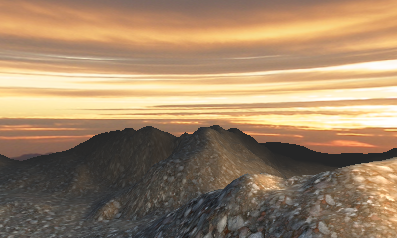

Generated Geometry
Ported from Microsoft's XNA 4.0 Generated Geometry.
Source for this sample on GitHub ↗

Play ▸Opens in a new tab and runs in this browser. Click the canvas first so it receives the keyboard.
About this sample
Generated Geometry demonstrates how custom XNA Content Pipeline processors can construct model geometry before a game runs. The terrain processor turns a height-field bitmap into a textured triangle grid, while the sky processor builds a cylindrical skydome and packages it with its sunset texture.
At runtime, an automatic camera circles the scene. XNA's BasicEffect lights and textures the terrain, adds warm specular highlights and fades distant ground into fog that matches the horizon.
The skydome ignores camera translation and is projected onto the far clip plane. Drawing it after the terrain with depth writes disabled avoids shading sky pixels hidden behind the generated landscape.
Controls
| Action | Keyboard | Gamepad |
|---|---|---|
| Exit | Esc | Back |
The camera moves automatically. In the browser, exiting ends the sample rather than closing the tab.